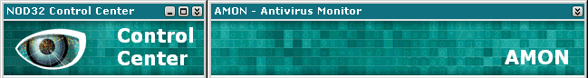

Inhabilitando la "mejor Heuristica del mercado"

Este mini-articulo lo escribi para demostrarle a byt3crow lo facil que es dejar inhabilitado a lo que él llama el mejor software del mercado en cuanto a lo que la
Heurística respecta.
Lo que haremos es tan sencillo, que demuestra lo mal que se defiende el NOD32 de amenazas conocidas.
Simplemente excluiremos del analisis AMON, todo el disco C:\ y D:\, dejando asi ejecutar cualquier virus que se ubique en esos discos.
Opinion Personal: La exclusion de directorios siempre ha sido el punto mas débil de los Avs.
<Manos a la obra>
Primero buscaremos estas dos entradas en el registro
HKLM\Software\Eset\Nod\CurrentVersion\Modules\AMON\Settings\Config000\Settings\exc_num
HKLM\Software\Eset\Nod\CurrentVersion\Modules\AMON\Settings\Config000\Settings\exc
La primera contiene el total de exclusiones.
La segunda llave contiene el directorio a excluir.
Primero, modificaremos el total de exclusiones, y pondremos un 2 (HEXA), porque vamos a excluir 2 directorios (en este caso van a ser 2 discos, pero da igual)
Recuerda que todo va en Hexadecimal.
Luego simplemente modificamos la segunda llave respetando la siguiente norma:
ComienzoID = 04 00 00 00
Dir = 43 3A 5C (esto es "C:\" en hexa)
FinID = 00 00 00 00 00 01 00
FINLLAVE = FF FF FF FF
exc = ComienzoID+Dir+FinID+FINLLAVE
no entendiste nada?? me extraña araña... supongamos q queremos agregar a la lista de exclusion el disco C:\. modificamos la llave ...AMON\Settings\Config000\Settings\exc con el siguiente valor:
04 00 00 00 43 3A 5C
00 00 00 00 00 01 00 FF FF FF FF
y la otra llave, AMON\Settings\Config000\Settings\exc_num con el valor en 1.
muy facil? ahora agregemos el disco D.
04 00 00 00 43 3A 5C 00 00 00 00 00 01 00
04 00 00 00 44 3A 5C 00 00 00 00 00 01 00
FF FF FF FF
recuerda q como ahora hay 2 directorios, cambiamos exc_num a 2.
Es todo. otros softwares corren con el mismo punto débil. por ejemplo el Norton AV (muuuuuy respetado) guarda su lista de exclusiones en un archivo llamado excl o exc... no recuerdo como se llama, pero termina en .DAT... xD bueno solo queria pegarle al NOD32. jaja
FIN DE LA TRANSMISION...
************************************
Nemlim / GEDZAC - ARGENTINA 2005
Agradezco a byt3 el haberme dado una excusa
para escribir este articulo cortito pero funcional.
************************************